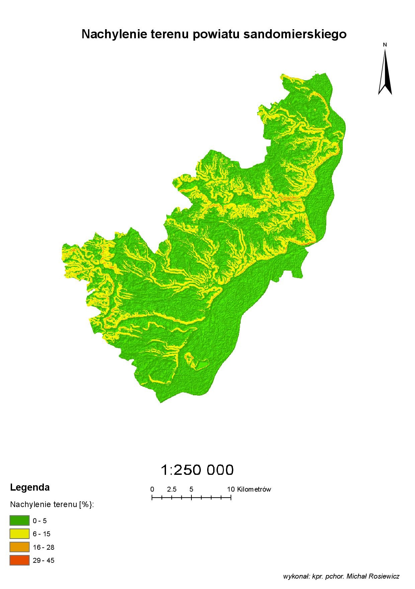
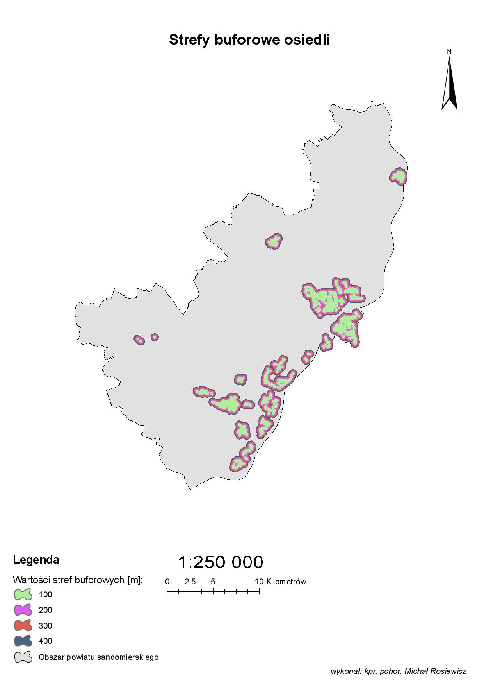
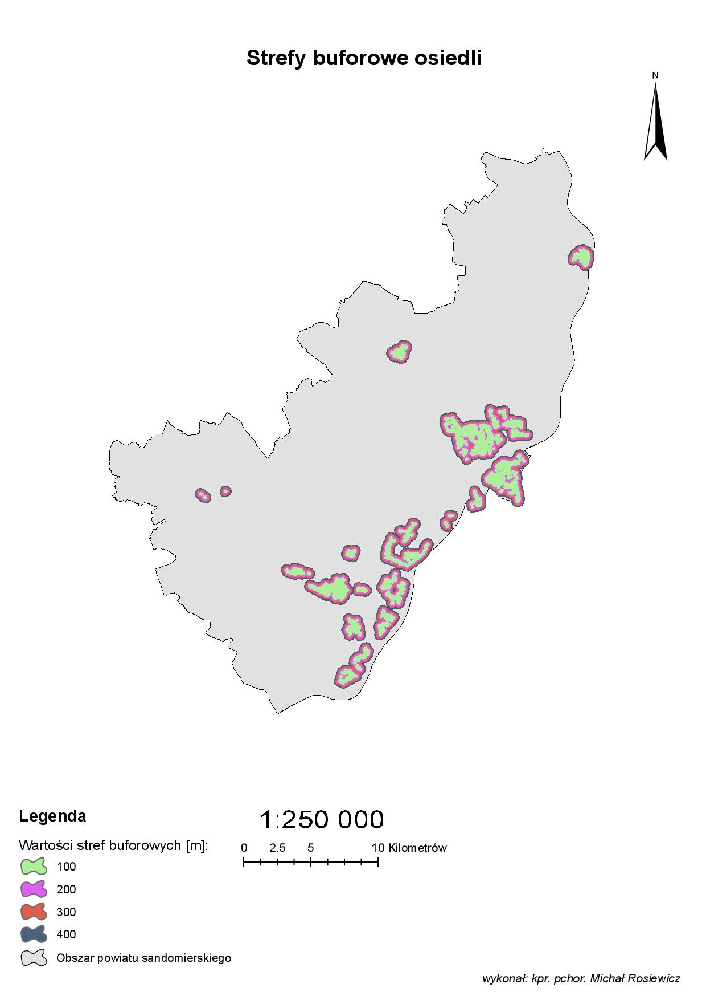

Analiza wielokryterialna
10.01.2019 | 15:30| Michał
W celu przeprowadzenia analizy wielokryterialnej, określono następujące odległości stref buforowych, dla poszczególnych obiektów terenowych, mających wpływ na lokalizację nowej szkoły:
- Cieki wodne: 150, 200, 250, 300 m,
- Wody powierzchniowe:100, 200, 300, 400 m,
- Drogi: 50, 100 m,
- Koleje: 200, 300, 400 m,
- Szkoły: 400, 600, 800 m,
- Myjnie samochodowe: 500, 1000, 1200 m,
- Cmentarze: 300, 400 m,
- Tereny rekreacyjne: 100, 200, 300, 400 m,
- Osiedla mieszkaniowe: 100, 200, 300, 400 m.
Poniżej przedstawiono wizualizację kątów nachylenia terenu oraz zasięgów stref buforowych dla wybranych obiektów terenowych, znajdujących się w rozpatrywanym obszarze.

 



Przeprowadzenie analizy wielokryterialnej, pozwoliło na otrzymanie wyników w postaci obszarów najbardziej korzystnych dla lokalizacji nowej szkoły. Istotne było opracowanie warunków, które otrzymany obszar miał spełniać. Wyznaczenie korzystnych obszarów, uwarunkowane było w zależności od odległości od zadanych obiektów terenowych. W związku z tym faktem, wzięto pod uwagę takie obiekty terenowe jak: obiekty hydrograficzne, sieć dróg, sieć kolejową, placówki edukacji, cmentarze, tereny rekreacyjne, osiedla mieszkaniowe a także myjnie samochodowe. Po przygotowaniu danych do opracowania, należało wykonać ciąg czynności, na które składały się: dopasowanie danych do obszaru opracowania, stworzenie stref buforowych, ograniczenie rozpatrywanych stref do granic powiatu, wprowadzenie wartości opisujących korzystne strefy oraz wygenerowanie rastra wynikowego.
Otrzymane w rezultacie analizy wielokryterialnej wyniki są jednoznaczne. Ze względu na określone przed analizą kryteria, wyznaczone obszary najkorzystniejsze, charakteryzują się małą powierzchnią. Pomimo tego faktu, obszary te pozwalają w pełni na wybudowanie tam nowej placówki edukacyjnej.